Purpose of Warning Signs
Warning signs alert you to potential hazards or changes in road conditions ahead. They are typically diamond-shaped with yellow backgrounds and black symbols or text.
Horizontal Signs
-
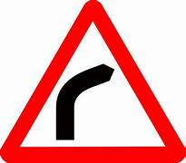
Sharp Turn (right) Sign
A warning sign indicating a sharp turn to the right ahead.
Tagalog : Isang babalang palatandaan na nagpapahiwatig ng matalim na liko sa kanan sa unahan. -
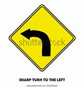
Sharp Turn (left) Sign
A warning sign indicating a sharp turn to the left ahead.
Tagalog : Isang babalang palatandaan na nagpapahiwatig ng matalim na liko sa kaliwa sa unahan. -
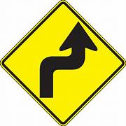
Reverse Turn Right Sign
A warning sign indicating that vehicles must reverse to the right.
Tagalog : Isang babalang palatandaan na nagpapahiwatig na ang mga sasakyan ay dapat mag-reverse pakanan. -
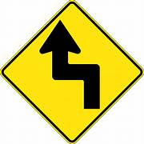
Reverse Turn Left Sign
Signs indicating that vehicles must reverse to the left.
Tagalog : Mga palatandaan na nagpapahiwatig na ang mga sasakyan ay dapat mag-reverse pakaliwa. -
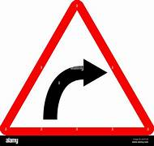
Curve Right
Signs indicating a rightward curve in the road ahead.
Tagalog : Mga palatandaan na nagpapahiwatig na ang kalsada ay may kurba pakanan sa unahan. -
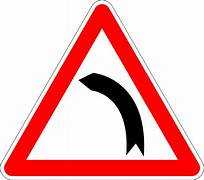
Curve Left
Signs indicating a leftward curve in the road ahead.
Tagalog : Mga palatandaan na nagpapahiwatig na ang kalsada ay may kurba pakaliwa sa unahan. -
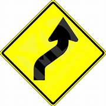
Reverse Curve Right
Signs indicating that vehicles must reverse to the right.
Tagalog : Mga palatandaan na nagpapahiwatig na ang mga sasakyan ay dapat mag-reverse pakanan. -
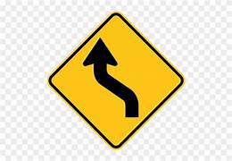
Reverse Curve Left
Signs indicating that vehicles must reverse to the left.
Tagalog : Mga palatandaan na nagpapahiwatig na ang mga sasakyan ay dapat mag-reverse pakaliwa. -
 Winding Road Right
Winding Road RightSigns indicating that the road winds to the right.
Tagalog : Mga palatandaan na nagpapahiwatig na ang kalsada ay paikot-ikot pakanan. -
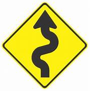
Winding Road Left
Signs indicating that the road winds to the left.
Tagalog : Mga palatandaan na nagpapahiwatig na ang kalsada ay paikot-ikot pakaliwa. -
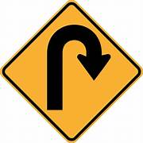
Hairpin Turn Right
Signs indicating a sharp right turn ahead.
Tagalog : Mga palatandaan na nagpapahiwatig na ang matalim na liko sa kanan ay nasa unahan. -
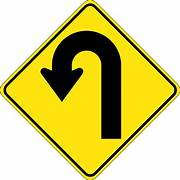
Hairpin Turn Left
Signs indicating a sharp left turn ahead.
Tagalog : Mga palatandaan na nagpapahiwatig na ang matalim na liko sa kaliwa ay nasa unahan. -
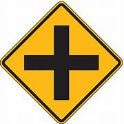
Intersection Ahead Sign
sign indicating that there's an upcoming intersection.
Tagalog : Palatandaan na nagpapahiwatig na may paparating na intersection. -
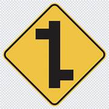
Staggered Intersection Right Sign
Signs indicating that traffic in the right lane must turn right.
Tagalog : Mga palatandaan na nagpapahiwatig na ang trapiko sa kanang lane ay dapat kumaliwa.
Intersection Signs
Signs indicating that traffic in the left lane must turn left.
Tagalog : Mga palatandaan na nagpapahiwatig na ang trapiko sa kaliwang lane ay dapat kumaliwa.
Signs indicating that traffic in the right lane must turn right.
Tagalog : Mga palatandaan na nagpapahiwatig na ang trapiko sa kanang lane ay dapat kumaliwa.
Signs indicating that traffic in the left lane must turn left.
Tagalog : Mga palatandaan na nagpapahiwatig na ang trapiko sa kaliwang lane ay dapat kumaliwa.
Signs indicating that a T-junction is ahead.
Tagalog : Mga palatandaan na nagpapahiwatig na ang isang T-junction ay nasa unahan.
Signs indicating that a Y-junction is ahead.
Tagalog : Mga palatandaan na nagpapahiwatig na ang isang Y-junction ay nasa unahan.
Signs indicating that a half-Y junction is ahead.
Tagalog : Mga palatandaan na nagpapahiwatig na ang isang half-Y junction ay nasa unahan.
Signs indicating that a half-Y junction is ahead.
Tagalog : Mga palatandaan na nagpapahiwatig na ang isang half-Y junction ay nasa unahan.
Signs indicating that a half-Y junction is behind.
Tagalog : Mga palatandaan na nagpapahiwatig na ang isang half-Y junction ay nasa likod.
Signs indicating that a half-Y junction is behind.
Tagalog : Mga palatandaan na nagpapahiwatig na ang isang half-Y junction ay nasa likod.
Signs indicating that traffic in the right lane must turn right.
Tagalog : Mga palatandaan na nagpapahiwatig na ang trapiko sa kanang lane ay dapat kumaliwa.
Signs indicating that traffic in the left lane must turn left.
Tagalog : Mga palatandaan na nagpapahiwatig na ang trapiko sa kaliwang lane ay dapat kumaliwa.
Signs indicating that a roundabout is ahead.
Tagalog : Mga palatandaan na nagpapahiwatig na ang isang roundabout ay nasa unahan.
Signs indicating that traffic is approaching an intersection.
Tagalog : Mga palatandaan na nagpapahiwatig na ang trapiko ay papalapit sa isang intersection.
Signs indicating that traffic in the right lane must turn right.
Tagalog : Mga palatandaan na nagpapahiwatig na ang trapiko sa kanang lane ay dapat kumaliwa.
Signs indicating that traffic in the left lane must turn left.
Tagalog : Mga palatandaan na nagpapahiwatig na ang trapiko sa kaliwang lane ay dapat kumaliwa.
Signs indicating that traffic in the right lane must merge.
Tagalog : Mga palatandaan na nagpapahiwatig na ang trapiko sa kanang lane ay dapat mag-merge.
Signs indicating that traffic in the left lane must merge.
Tagalog : Mga palatandaan na nagpapahiwatig na ang trapiko sa kaliwang lane ay dapat mag-merge.
Advance Warning/Traffic Control Device Signs
Signs indicating that a traffic light is ahead.
Tagalog : Mga palatandaan na nagpapahiwatig na ang isang traffic light ay nasa unahan.
Signs indicating that a stop sign is ahead.
Tagalog : Mga palatandaan na nagpapahiwatig na ang isang stop sign ay nasa unahan.
Signs indicating that a give way sign is ahead.
Tagalog : Mga palatandaan na nagpapahiwatig na ang isang give way sign ay nasa unahan.
Road width Signs
Signs indicating that the road narrows ahead.
Tagalog : Mga palatandaan na nagpapahiwatig na ang kalsada ay lumiit sa unahan.
Signs indicating that a narrow bridge is ahead.
Tagalog : Mga palatandaan na nagpapahiwatig na ang isang makitid na tulay ay nasa unahan.
Signs indicating that the start of road divides is ahead.
Tagalog : Mga palatandaan na nagpapahiwatig na ang simula ng paghahati ng kalsada ay nasa unahan.
Signs indicating that the end of road divides is ahead.
Tagalog : Mga palatandaan na nagpapahiwatig na ang katapusan ng paghahati ng kalsada ay nasa unahan.
Road Obstacle Signs
Signs indicating that a bridge is opening.
Tagalog : Mga palatandaan na nagpapahiwatig na ang isang tulay ay nagbubukas.
Signs indicating that the road is uneven.
Tagalog : Mga palatandaan na nagpapahiwatig na ang kalsada ay hindi pantay.
Signs indicating that a hump is ahead.
Tagalog : Mga palatandaan na nagpapahiwatig na ang isang bukol ay nasa unahan.
Signs indicating that there is a steep descent to the right.
Tagalog : Mga palatandaan na nagpapahiwatig na may matarik na pagbaba sa kanan.
Signs indicating that there is a steep descent to the left.
Tagalog : Mga palatandaan na nagpapahiwatig na may matarik na pagbaba sa kaliwa.
Signs indicating that there is a steep climb to the right.
Tagalog : Mga palatandaan na nagpapahiwatig na may matarik na pag-akyat sa kanan.
Signs indicating that there is a steep climb to the left.
Tagalog : Mga palatandaan na nagpapahiwatig na may matarik na pag-akyat sa kaliwa.
Signs indicating that there is a spillway ahead.
Tagalog : Mga palatandaan na nagpapahiwatig na may spillway sa unahan.
Signs indicating that there is a flood prone area ahead.
Tagalog : Mga palatandaan na nagpapahiwatig na may flood prone area sa unahan.

Signs indicating that there is a risk of falling debris from the right.
Tagalog : Mga palatandaan na nagpapahiwatig na may panganib ng pagbagsak ng debris mula sa kanan.
Signs indicating that there is a risk of falling debris from the left.
Tagalog : Mga palatandaan na nagpapahiwatig na may panganib ng pagbagsak ng debris mula sa kaliwa.
Signs indicating that the road is slippery when wet.
Tagalog : Mga palatandaan na nagpapahiwatig na ang kalsada ay madulas kapag basa.
Signs indicating that there is a risk of animals crossing the road.
Tagalog : Mga palatandaan na nagpapahiwatig na may panganib ng mga hayop na tumatawid sa kalsada.
Signs indicating that there is a risk of low flying aircraft in the area.
Tagalog : Mga palatandaan na nagpapahiwatig na may panganib ng mga mababang lumilipad na sasakyang panghimpapawid sa lugar.
Pedestrians Signs
Signs indicating that there is a pedestrian crossing ahead.
Tagalog : Mga palatandaan na nagpapahiwatig na ang isang pedestrian crossing ay nasa unahan.

Signs indicating that there is a pedestrian crossing ahead.
Tagalog : Mga palatandaan na nagpapahiwatig na ang isang pedestrian crossing ay nasa unahan.
Signs indicating that there is a Children Pedestrians crossing ahead.
Tagalog : Mga palatandaan na nagpapahiwatig na ang isang Children Pedestrians crossing ay nasa unahan.
Signs advising pedestrians to use designated crossing areas.
Tagalog : Mga palatandaan na nag-aabiso sa mga pedestrian na gumamit ng mga itinalagang lugar ng pagtawid.
Signs indicating that there is a bicycle lane ahead.
Tagalog : Mga palatandaan na nagpapahiwatig na ang isang bicycle lane ay nasa unahan.
RailWay Level Crossing Signs
Signs indicating that vehicles must stop or give the right way.
Tagalog : Mga palatandaan na nagpapahiwatig na ang mga sasakyan ay dapat huminto o magbigay ng karapatan sa daan.
Signs indicating that there is a railway crossing ahead.
Tagalog : Mga palatandaan na nagpapahiwatig na ang isang railway crossing ay nasa unahan.
Signs indicating that there is a railway crossing ahead.
Tagalog : Mga palatandaan na nagpapahiwatig na ang isang railway crossing ay nasa unahan.